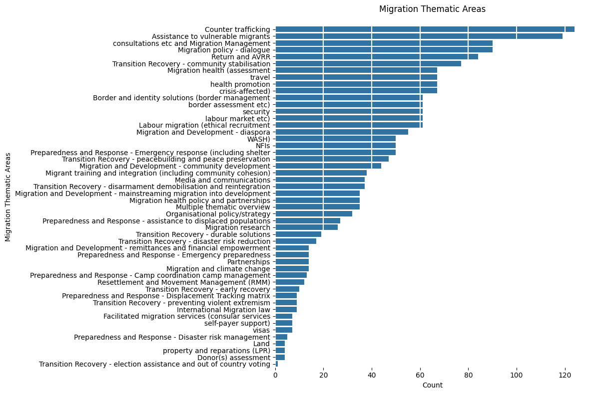
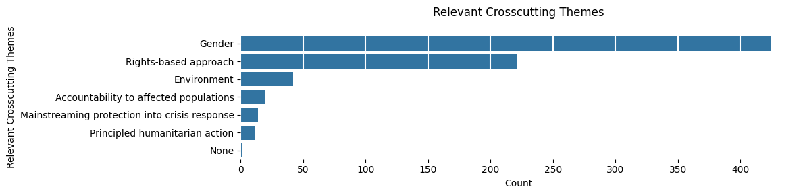
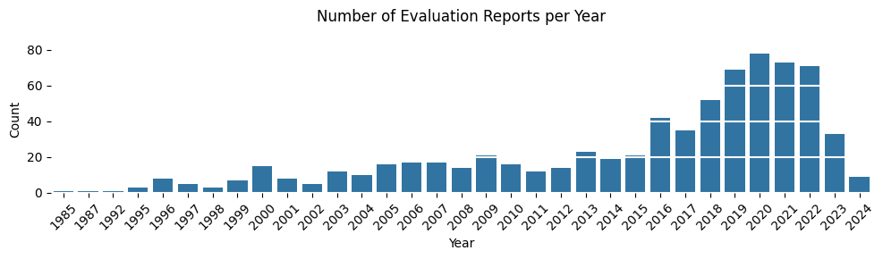
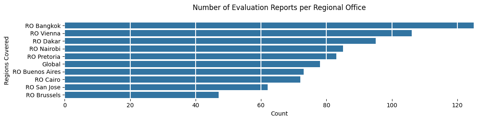
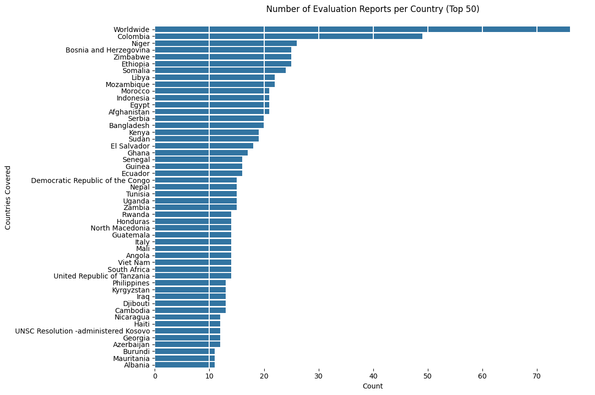

import pandas as pd
from evaluatr.readers import load_evals
from pathlib import Path
from fastcore.all import *
from rich import print
from matplotlib import pyplot as plt
import seaborn as snsEvaluation reports EDA
IOM Reports Exploratory Data Analysis
Imports
Configs
path = Path("../../_data/output/evaluations.json")print(load_evals(path).filter(lambda x: "Migration" in x['meta']['Title'].lower()))[]
Accessing evaluation report
By ID
idx = '9558482be1b049827f630c1760025c0f'
[o for o in load_evals(path).filter(lambda x: x['id'] == idx)][{'id': '9558482be1b049827f630c1760025c0f',
'docs': [{'Document Subtype': 'Evaluation brief',
'File URL': 'https://evaluation.iom.int/sites/g/files/tmzbdl151/files/docs/resources/IOM-CREST%20Evaluation-Brief-D3_Thi%20Bao%20Chau%20NGUYEN.pdf',
'File description': 'Evaluation Brief'},
{'Document Subtype': 'Annexes',
'File URL': 'https://evaluation.iom.int/sites/g/files/tmzbdl151/files/docs/resources/IOM-CREST%20Evaluation-D3_Thi%20Bao%20Chau%20NGUYEN.pdf',
'File description': 'Terms of Reference'},
{'Document Subtype': 'Evaluation report',
'File URL': 'https://evaluation.iom.int/sites/g/files/tmzbdl151/files/docs/resources/Management%20Response_March%202024%20%281%29.docx',
'File description': 'Evaluation Report'},
{'Document Subtype': 'Management response',
'File URL': 'https://evaluation.iom.int/sites/g/files/tmzbdl151/files/docs/resources/ToR_Final%20Evaluation_CREST_Thi%20Bao%20Chau%20NGUYEN.pdf',
'File description': 'Management Response'}],
'meta': {'Title': 'Final Evaluation of the Enhancing Corporate Responsibility in Eliminating Slavery and Trafficking in Asia (CREST) Project',
'Year': 2023,
'Author': 'UPENDO Consulting Inc.',
'Best Practicesor Lessons Learnt': 'Yes',
'Date of Publication': '2023-08-01',
'Donor': 'Government of Sweden',
'Evaluation Brief': 'Yes',
'Evaluation Commissioner': 'IOM',
'Evaluation Coverage': 'Regional',
'Evaluation Period From Date': 'nan',
'Evaluation Period To Date': 'NaT',
'Executive Summary': 'Yes',
'External Version of the Report': 'Yes',
'Languages': 'English',
'Migration Thematic Areas': 'Assistance to vulnerable migrants',
'Name of Project(s) Being Evaluated': nan,
'Number of Pages Excluding annexes': nan,
'Other Documents Included': nan,
'Project Code': 'LM.0331',
'Countries Covered': ['Bangladesh',
'Cambodia',
'China',
'Hong Kong SAR',
'Hong Kong SAR',
'China',
'Indonesia',
"Lao People's Democratic Republic",
'Malaysia',
'Myanmar',
'Nepal',
'Philippines',
'Republic of Korea',
'Sri Lanka',
'Thailand',
'Viet Nam'],
'Regions Covered': 'RO Bangkok',
'Relevant Crosscutting Themes': 'Accountability to affected populations, Environment, Gender, Rights-based approach',
'Report Published': 'Yes',
'Terms of Reference': 'Yes',
'Type of Evaluation Scope': 'Programme/Project',
'Type of Evaluation Timing': 'Final (at the end of the project/programme)',
'Type of Evaluator': 'External',
'Level of Evaluation': 'Decentralized',
'Document Subtype': 'Evaluation brief, Annexes, Evaluation report, Management response',
'File URL': 'https://evaluation.iom.int/sites/g/files/tmzbdl151/files/docs/resources/IOM-CREST%20Evaluation-Brief-D3_Thi%20Bao%20Chau%20NGUYEN.pdf, https://evaluation.iom.int/sites/g/files/tmzbdl151/files/docs/resources/IOM-CREST%20Evaluation-D3_Thi%20Bao%20Chau%20NGUYEN.pdf, https://evaluation.iom.int/sites/g/files/tmzbdl151/files/docs/resources/Management%20Response_March%202024%20%281%29.docx, https://evaluation.iom.int/sites/g/files/tmzbdl151/files/docs/resources/ToR_Final%20Evaluation_CREST_Thi%20Bao%20Chau%20NGUYEN.pdf',
'File description': 'Evaluation Brief, Terms of Reference, Evaluation Report, Management Response',
'Management response': 'Yes',
'Date added': 'Tue, 10/03/2023 - 17:05',
'Metaevaluation': '2020-24',
'exclude': nan,
'reason': nan}}]By Title
title = 'Review of the use and follow-up of'
title = "Impact evaluation of the UN Secretary General’s Peacebuilding"
title = "Evaluation of Mental Health and Psychosocial Support in IOM"
[o for o in load_evals(path).filter(lambda x: title.lower() in x['meta']['Title'].lower())][{'id': '22cac1c000836253adc445993e101560',
'docs': [{'Document Subtype': 'Evaluation report',
'File URL': 'https://evaluation.iom.int/sites/g/files/tmzbdl151/files/docs/resources/Final%20Report%20Evaluation%20of%20MHPSS%20in%20IOM%208%202024.pdf',
'File description': 'nan'}],
'meta': {'Title': 'Evaluation of Mental Health and Psychosocial Support in IOM',
'Year': 2024,
'Author': 'IOM CENTRAL EVALUATION',
'Best Practicesor Lessons Learnt': 'Yes',
'Date of Publication': '2024-08-23',
'Donor': 'IOM',
'Evaluation Brief': 'Yes',
'Evaluation Commissioner': 'IOM',
'Evaluation Coverage': 'Global',
'Evaluation Period From Date': 'nan',
'Evaluation Period To Date': 'NaT',
'Executive Summary': nan,
'External Version of the Report': nan,
'Languages': 'English',
'Migration Thematic Areas': 'Migration and Development - mainstreaming migration into development, Migration health (assessment, travel, health promotion, crisis-affected), Migration health policy and partnerships, Multiple thematic overview, Organisational policy/strategy',
'Name of Project(s) Being Evaluated': nan,
'Number of Pages Excluding annexes': nan,
'Other Documents Included': nan,
'Project Code': nan,
'Countries Covered': ['Worldwide'],
'Regions Covered': 'Global',
'Relevant Crosscutting Themes': 'Gender, Rights-based approach',
'Report Published': 'Yes',
'Terms of Reference': 'Yes',
'Type of Evaluation Scope': 'Strategy, Thematic',
'Type of Evaluation Timing': 'Not applicable',
'Type of Evaluator': 'Central/OIG',
'Level of Evaluation': 'Centralized',
'Document Subtype': 'Evaluation report, Evaluation brief',
'File URL': 'https://evaluation.iom.int/sites/g/files/tmzbdl151/files/docs/resources/Final%20Report%20Evaluation%20of%20MHPSS%20in%20IOM%208%202024.pdf',
'File description': nan,
'Management response': nan,
'Date added': 'Mon, 08/26/2024 - 09:29',
'Metaevaluation': nan,
'exclude': nan,
'reason': nan}}]Counts & Bar Charts per type
import pandas as pd
import json
from pathlib import Path
def create_evaluation_dataframes(json_path):
"""
Create multiple DataFrames optimized for different types of analysis
"""
with open(json_path) as f:
evals = json.load(f)
# Main DataFrame (evaluation level)
eval_records = []
for eval_record in evals:
record = {'id': eval_record['id']}
# Flatten metadata, handling both lists and strings
for key, value in eval_record['meta'].items():
if isinstance(value, list):
record[f"{key}_count"] = len(value)
record[f"{key}_concatenated"] = '; '.join(value) if value else None
record[key] = value # Keep original list for reference
elif isinstance(value, str) and ',' in value and key in ['Migration Thematic Areas', 'Relevant Crosscutting Themes']:
# Handle comma-separated strings as if they were lists
items = [item.strip() for item in value.split(',') if item.strip()]
record[f"{key}_count"] = len(items)
record[f"{key}_concatenated"] = value
record[key] = items # Convert to list for consistency
else:
record[key] = value
record['doc_count'] = len(eval_record['docs'])
eval_records.append(record)
df_main = pd.DataFrame(eval_records)
# Exploded DataFrames for multi-valued fields
exploded_dfs = {}
list_fields = ['Countries Covered', 'Migration Thematic Areas', 'Relevant Crosscutting Themes']
for field in list_fields:
if field in df_main.columns:
# Use the list version we created above
temp_df = df_main[['id', field]].copy()
temp_df = temp_df.dropna()
if len(temp_df) > 0:
# Explode the list column
exploded = temp_df.explode(field)
exploded[field] = exploded[field].str.strip()
exploded_dfs[field] = exploded[['id', field]]
# Documents DataFrame
doc_records = []
for eval_record in evals:
eval_id = eval_record['id']
meta = eval_record['meta']
for doc in eval_record['docs']:
doc_record = {
'eval_id': eval_id,
'title': meta.get('Title'),
'year': meta.get('Year'),
'author': meta.get('Author'),
'donor': meta.get('Donor'),
'doc_subtype': doc['Document Subtype'],
'file_url': doc['File URL'],
'file_description': doc['File description']
}
doc_records.append(doc_record)
df_docs = pd.DataFrame(doc_records)
return {
'main': df_main,
'documents': df_docs,
'exploded': exploded_dfs
}path = Path("../../_data/output/evaluations.json")
dataframes = create_evaluation_dataframes(path)
# Access different DataFrames
df_main = dataframes['main']
df_docs = dataframes['documents']
df_countries = dataframes['exploded']['Countries Covered']
df_themes = dataframes['exploded']['Migration Thematic Areas']
print("Main DataFrame:", df_main.shape)
print("Documents DataFrame:", df_docs.shape)
print("Countries DataFrame:", df_countries.shape)
print("Themes DataFrame:", df_themes.shape)Main DataFrame: (731, 44)
Documents DataFrame: (1405, 8)
Countries DataFrame: (1491, 2)
Themes DataFrame: (1948, 2)
df_main.head()| id | Title | Year | Author | Best Practicesor Lessons Learnt | Date of Publication | Donor | Evaluation Brief | Evaluation Commissioner | Evaluation Coverage | ... | Level of Evaluation | Document Subtype | File URL | File description | Management response | Date added | Metaevaluation | exclude | reason | doc_count | |
|---|---|---|---|---|---|---|---|---|---|---|---|---|---|---|---|---|---|---|---|---|---|
| 0 | 1a57974ab89d7280988aa6b706147ce1 | EX-POST EVALUATION OF THE PROJECT: NIGERIA: S... | 2023 | Abderrahim El Moulat | Yes | 2023-05-10 | Government of Germany | Yes | Donor, IOM | Country | ... | Decentralized | Evaluation report, Evaluation brief | https://evaluation.iom.int/sites/g/files/tmzbd... | Evaluation Report , Evaluation Brief | No | Fri, 07/07/2023 - 15:35 | 2020-24 | NaN | NaN | 2 |
| 1 | c660e774d14854e20dc74457712b50ec | FINAL EVALUATION OF THE PROJECT: STRENGTHEN BO... | 2023 | Abderrahim El Moulat | Yes | 2023-02-14 | Government of Canada | Yes | Donor, IOM | Multi-country | ... | Decentralized | Evaluation report, Evaluation brief | https://evaluation.iom.int/sites/g/files/tmzbd... | Evaluation Report , Evaluation Brief | No | Fri, 05/19/2023 - 16:49 | 2020-24 | NaN | NaN | 2 |
| 2 | 2cae361c6779b561af07200e3d4e4051 | Final Evaluation of the project "SUPPORTING TH... | 2022 | Abderrahim El Moulat | Yes | 2022-09-15 | IOM Development Fund | Yes | IOM | Country | ... | Decentralized | Evaluation report, Evaluation brief | https://evaluation.iom.int/sites/g/files/tmzbd... | Evaluation Report , Evaluation Brief | No | Thu, 02/23/2023 - 11:43 | 2020-24 | NaN | NaN | 2 |
| 3 | a9dea21fd254df7759b3936903e0a885 | Finale Internal Evluation: ENHANCING THE CAPAC... | 2022 | Abderrahim El Moulat | Yes | 2022-06-22 | IOM Development Fund | Yes | Donor, IOM | Country | ... | Decentralized | Evaluation brief, Evaluation report | https://evaluation.iom.int/sites/g/files/tmzbd... | Evaluation brief , Evaluation Report | No | Mon, 08/08/2022 - 11:37 | 2020-24 | NaN | NaN | 2 |
| 4 | f0b09b92ea8ad6dddd9623de68a8d278 | Evaluation Finale Interne du Projet "ENGAGEMEN... | 2022 | Abderrahim El Moulat | Yes | 2022-05-17 | IOM Development Fund | Yes | Donor, IOM | Country | ... | Decentralized | Evaluation brief, Evaluation report | https://evaluation.iom.int/sites/g/files/tmzbd... | Evaluation Brief, Evaluation Report | No | Fri, 08/05/2022 - 15:00 | 2020-24 | NaN | NaN | 2 |
5 rows × 44 columns
df_docs.head()| eval_id | title | year | author | donor | doc_subtype | file_url | file_description | |
|---|---|---|---|---|---|---|---|---|
| 0 | 1a57974ab89d7280988aa6b706147ce1 | EX-POST EVALUATION OF THE PROJECT: NIGERIA: S... | 2023 | Abderrahim El Moulat | Government of Germany | Evaluation report | https://evaluation.iom.int/sites/g/files/tmzbd... | Evaluation Report |
| 1 | 1a57974ab89d7280988aa6b706147ce1 | EX-POST EVALUATION OF THE PROJECT: NIGERIA: S... | 2023 | Abderrahim El Moulat | Government of Germany | Evaluation brief | https://evaluation.iom.int/sites/g/files/tmzbd... | Evaluation Brief |
| 2 | c660e774d14854e20dc74457712b50ec | FINAL EVALUATION OF THE PROJECT: STRENGTHEN BO... | 2023 | Abderrahim El Moulat | Government of Canada | Evaluation report | https://evaluation.iom.int/sites/g/files/tmzbd... | Evaluation Report |
| 3 | c660e774d14854e20dc74457712b50ec | FINAL EVALUATION OF THE PROJECT: STRENGTHEN BO... | 2023 | Abderrahim El Moulat | Government of Canada | Evaluation brief | https://evaluation.iom.int/sites/g/files/tmzbd... | Evaluation Brief |
| 4 | 2cae361c6779b561af07200e3d4e4051 | Final Evaluation of the project "SUPPORTING TH... | 2022 | Abderrahim El Moulat | IOM Development Fund | Evaluation report | https://evaluation.iom.int/sites/g/files/tmzbd... | Evaluation Report |
df_countries.head()| id | Countries Covered | |
|---|---|---|
| 0 | 1a57974ab89d7280988aa6b706147ce1 | Nigeria |
| 1 | c660e774d14854e20dc74457712b50ec | Mali |
| 1 | c660e774d14854e20dc74457712b50ec | Niger |
| 2 | 2cae361c6779b561af07200e3d4e4051 | Cabo Verde |
| 3 | a9dea21fd254df7759b3936903e0a885 | Senegal |
df_countries.groupby('id').size().sort_values(ascending=False)id
1eafa00d143cec4b2067c938cd0665ad 18
9558482be1b049827f630c1760025c0f 16
2aacaf6d93836e795bb78009c30fdcfb 13
f6d27662a2d9ac51c9212a03615b5bd7 12
8d6171c5252c8b5f537c8f22d6df7b61 12
..
6b30198a6f8b83c8cbf36ef7d9e8cb29 1
6ba7723382db006326abd2d12db64380 1
6bb4ac298da9a2e13fd85836bfa70a18 1
6c20c87993c52eac06f6c9c20d193041 1
ffa7846d8ad478ed9fa22411e39fc685 1
Length: 731, dtype: int64Migration Thematic Areas
theme_counts = df_themes.groupby('Migration Thematic Areas').size().sort_values(ascending=False)
plt.figure(figsize=(12, 8))
sns.barplot(x=theme_counts.values, y=theme_counts.index, orient='h')
plt.grid(axis='x', color='white', lw=1.5)
plt.box(False)
plt.title('Migration Thematic Areas', pad=20)
plt.xlabel('Count')
plt.tight_layout()
Cross-cutting Themes
df_crosscutting = dataframes['exploded']['Relevant Crosscutting Themes']
theme_counts = df_crosscutting.groupby('Relevant Crosscutting Themes').size().sort_values(ascending=False)
plt.figure(figsize=(12, 3))
sns.barplot(x=theme_counts.values, y=theme_counts.index, orient='h')
plt.grid(axis='x', color='white', lw=1.5)
plt.box(False)
plt.title('Relevant Crosscutting Themes', pad=20)
plt.xlabel('Count')
plt.tight_layout()
Year
year_counts = df_main['Year'].value_counts().sort_index()
plt.figure(figsize=(10, 3))
sns.barplot(x=year_counts.index, y=year_counts.values)
plt.grid(axis='y', color='white', lw=1.5)
plt.box(False)
plt.title('Number of Evaluation Reports per Year', pad=20)
plt.xlabel('Year')
plt.ylabel('Count')
plt.xticks(rotation=45)
plt.tight_layout()
IOM Regional Office
regional_offices = df_main['Regions Covered'].str.split(r',\s*').explode()
# Count reports per regional office
ro_counts = regional_offices.value_counts()
plt.figure(figsize=(12, 3))
sns.barplot(x=ro_counts.values, y=ro_counts.index, orient='h')
plt.grid(axis='x', color='white', lw=1.5)
plt.box(False)
plt.title('Number of Evaluation Reports per Regional Office', pad=20)
plt.xlabel('Count')
plt.tight_layout()
Country covered
n_countries = 50
country_counts = df_countries.groupby('Countries Covered').size().sort_values(ascending=False)
top_X_countries = country_counts.head(n_countries)
plt.figure(figsize=(12, 8))
sns.barplot(x=top_X_countries.values, y=top_X_countries.index, orient='h')
plt.grid(axis='x', color='white', lw=1.5)
plt.box(False)
plt.title(f'Number of Evaluation Reports per Country (Top {n_countries})', pad=20)
plt.xlabel('Count')
plt.tight_layout()
Evaluation brief available?
has_brief = df_main['Evaluation Brief'] == 'Yes'
brief_percentage = (has_brief.sum() / len(df_main)) * 100
print(f"% of reports with Evaluation Brief: {brief_percentage:.1f}% ({has_brief.sum()} out of {len(df_main)} total reports)")% of reports with Evaluation Brief: 32.7% (239 out of 731 total reports)
Type of Report
df_docs['doc_subtype'].value_counts()doc_subtype
Evaluation report 742
Evaluation brief 245
Annexes 166
Management response 142
Special related reports/documents 56
Evaluation summary 48
Internal evaluation report 3
nan 2
External evaluation report 1
Name: count, dtype: int64Type of Evaluation Scope
df_main['Type of Evaluation Scope'].value_counts()Type of Evaluation Scope
Programme/Project 633
Thematic 27
Programme/Project, Thematic 13
Strategy 10
Synthesis 9
Strategy, Thematic 7
Programme/Project, Strategy 4
Thematic, Strategy 3
Policy 3
Thematic, Programme/Project 3
Policy, Thematic 2
Strategy, Programme/Project 2
Programme/Project, Synthesis 2
Thematic, Synthesis 1
Policy, Strategy 1
Strategy, Policy 1
Policy, Programme/Project, Strategy 1
Thematic, Policy 1
Policy, Programme/Project 1
Programme/Project, Thematic, Policy 1
Name: count, dtype: int64Type of Evaluation Timing (%)
df_main['Type of Evaluation Timing'].value_counts(normalize=True).mul(100).round(1)Type of Evaluation Timing
Final (at the end of the project/programme) 47.7
Ex-post (after the end of the project/programme) 20.2
Mid-term (during the project's implementation/programme) 19.0
Not applicable 9.8
Not available 2.1
Real-time (at the early stages of project/programme) 0.8
Ex-ante (before the start of a project/programme) 0.4
Name: proportion, dtype: float64Type of Evaluator (%)
df_main['Type of Evaluator'].value_counts(normalize=True).mul(100).round(1)Type of Evaluator
External 62.8
Internal 25.5
Central/OIG 10.0
Mixed (Internal/OIG and external) 1.6
Name: proportion, dtype: float64Level of Evaluation (%)
df_main['Level of Evaluation'].value_counts(normalize=True).mul(100).round(1)Level of Evaluation
Decentralized 86.6
Centralized 10.8
Other 2.6
Name: proportion, dtype: float64